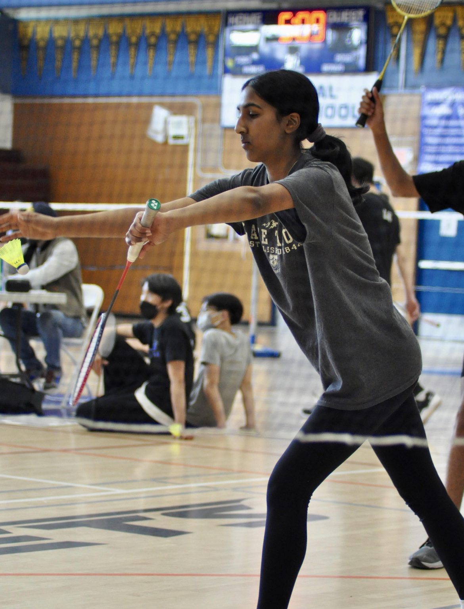

Over Spring Break, my family and I visited Spain. We took many tours of Medieval cities. In the photo above, we are standing infront of one of the city churches It was very interesting to learn about Spain's history.
Here's a photo of me about to serve in a badminton game. Badminton was really fun for me because I got to play with my friends and meet new people. It was a very chill sport that I'm glad I got to experience this year.